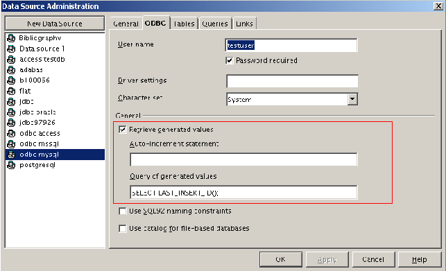
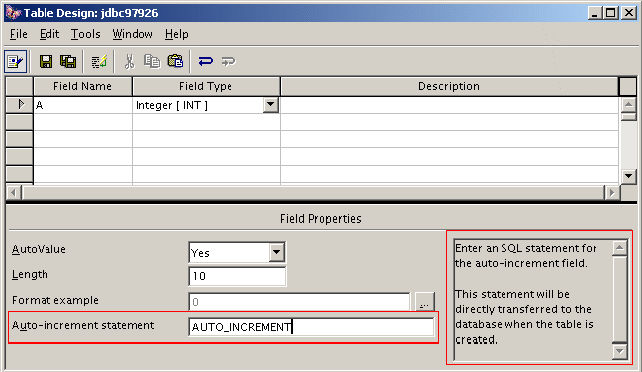

Version History
|
What/When |
Who |
|---|---|
|
Draft---July 18, 2002 |
Ocke Janssen |
|
GUI string review---July 25, 2002 |
Elizabeth Matthis |
|
GUI change---July 26, 2002 |
Ocke Janssen |
|
Final--- July 26, 2002fill in date |
Ocke Janssen |
At the moment it is not possible to create auto increment columns and to retrieve the value of an auto increment column when a new row was inserted.
Due to the fact that there exists no standard way on defining auto increment columns when creating a new table, a general approach is not possible. For example: MySQL identifies an auto increment definition of a column with the key word “auto_increment”, the MS SQL Server on the other side uses the keyword “increment(1,1)” to identify the auto increment column.
The retrieving of an auto increment column's value, when inserting a new row, is already defined in the JDBC API 3.0. There the statement supports an additional method which returns a result set to access the new inserted auto increment column's value. This result set also supports meta data. To check if the statement supports this mechanism, the database meta data is extended by new support method which simply returns true or false.
To allow a general approach of defining/retrieving auto increment columns/values, the user must have the possibility to define a statement which should be appended at the column definition when creating a table or should be called when fetching the new value of the auto increment column.
When creating tables for any kind of database, the current handling at the moment is that we use a general SDBCX layer for all database drivers which do not support the layer by their self. In other words the user has to take no action when the database driver supports already the SDBCX layer. For the case that the driver doesn't support the SDBCX layer and the user creates a new table, the generated SQL statement may look like this:
CREATE TABLE “table1” (“id” INTEGER)
The “CREATE TABLE” statement doesn't support any auto increment features, so that it isn't possible to create such columns. For MySQL this statement for an auto increment column looks like this:
CREATE TABLE “table1” (“id” INTEGER AUTO_INCREMENT)
Like this examples shows the user must have the opportunity to add the missing part of the statement to the “CREATE TABLE” statement. This can be done in two different ways which mustn't exclude each other.
The data source stores in their info property an additional string which should be appended to the column part when creating an auto increment column. To allow the user to insert this string the data source administration dialog could be extended by a simple text field and may be an additional checkbox which enables this text field.
The table design offers an additional field on the column properties area when an auto increment type was selected. This field can be used by the user to define a string which should be appended to the “CREATE TABLE” statement.
The points 1. and 2. are both used and under point 2, the string which the user inserted under point 1 will be displayed in the extra field.
The 3rd approach would be the one which allows the user the most flexibility to get a predefined string which he could change if necessary. The best place to store the value for the data source would be the data source administration dialog. To be more precise this would be implemented for the JDBC and the ODBC drivers (they don't support the SDBCX layer). All other drivers support the SDBCX layer.
As mentioned in the problem description JDBC 3.0 already defines methods to accomplish the task but it is not possible just to forward this to the used drivers. Many drivers as also APIs like ODBC don't support this feature. To fit near all databases, a method has to be implemented that allows to fetch the new inserted auto increment value. Many databases support a special SQL statement which allows to fetch this value. Mostly these statements are database specific and not SQL conform. So a similar approach as for the creation of auto increment columns should be chosen. The data source should also store a SQL string which allows to fetch the auto increment values. This string will then be executed by the statement when asked for the auto increment values after inserting a new row. To be compatible as possible to any kind of database the SQL string, stored in the data source, must fulfill some additional specifications to be valid for different tables. In other words, the SQL string must contain some keywords like $column1 or $table1 which will be replaced with the auto increment column name or with the used table. A general string could already be inserted into the data source dialog which is not the best solution but works for a lot of drivers:
“select count($column1)+1 from $table1”
If the supporting of this feature should be disabled the string could be cleared by the user or an additional checkbox must be inserted into to the dialog to enable or disable this feature. When this feature is enabled the database meta data object implemented by the driver will return false when asking the general support method for the feature “AutoRetrievingEnabled” otherwise true. When true was returned the statement object implemented by the driver allows the creation of a result set to fetch the auto increment values.

|
English |
German |
Comment |
|---|---|---|
|
~Retrieve generated values |
Generierte Werte ~berücksichtigen |
Checkbox to enable this feature |
|
~Auto-increment statement |
~Auto-Increment-Ausdruck |
FixedText which contains the statement which should be appended after each column definition |
|
~Query of generated values |
Abfrage der generierten ~Werte |
FixedText which contains the statement which will be called after an “INSERT” statement |

|
English |
German |
Comment |
|---|---|---|
|
Auto-increment statement |
~Auto-Increment-Ausdruck |
FixedText which contains the same value as the 2nd FixedText in data source administration dialog |
|
Enter an SQL statement for the auto-increment field.\n\nThis statement will be directly transferred to the database when the table is created. |
Geben Sie hier einen SQL Ausdruck für das Auto-Increment-Feld an.\n\nDieser Ausdruck wird beim Erzeugen der Tabelle direkt an die Datenbank übertragen. |
HelpText for this field which appears in the left side control |